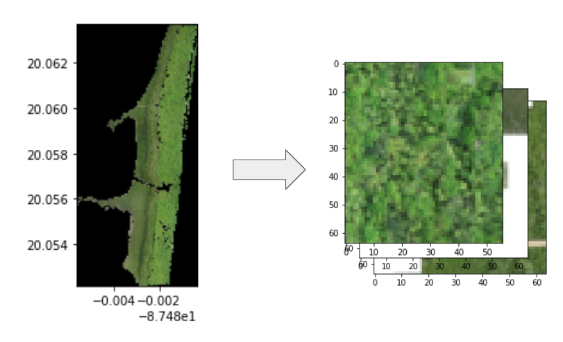
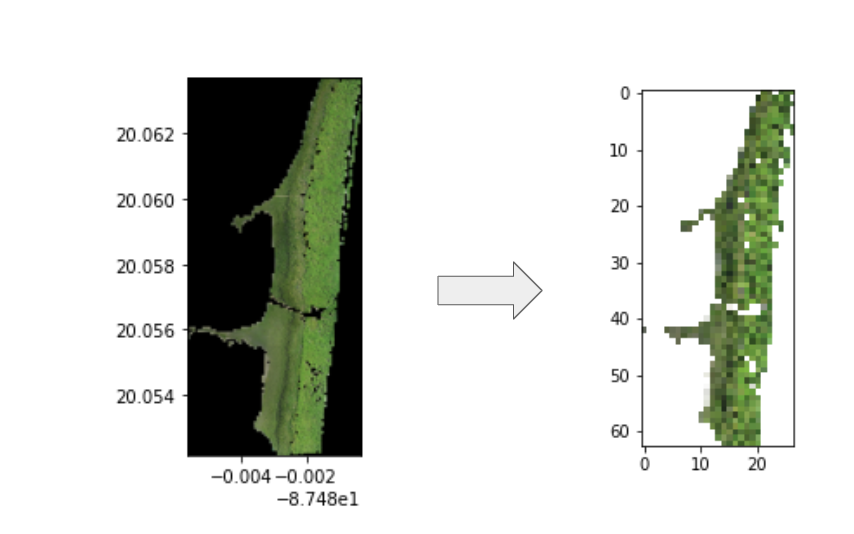

Introduction
GIS Utils is a python package aimed to improve on many of the inabilities of GDAL Python scripts to be faster, properly multithreaded, and much easier to use with a ML workflow than GDAL on its own. GIS Utils provides a few high level abstractions of GIS workflows aimed to be used for ML workflows, such as tilizing of images, raster to image conversions, and a few other tools specific to our workflow in particular.
Requirements
In order to use GIS Utils, the below python libraries must be installed:
rasterio
fiona
geopandas
gdal
We reccomending using Google Colab or an Anaconda Environment as this package also requires many of the packages preincluded in those environments:
tqdm
numpy
pandas
For your convenience, we have a series of pip and apt-get commands that you can use below in order to download all of the prerequisite packages for GIS Utils.
!apt-get update
!apt-get install libgdal-dev -y
!apt-get install python-gdal -y
!apt-get install python-numpy python-scipy -y
!pip install rasterio
!pip install fiona
!pip install geopandas
Once the previous libraries have been installed, you can simply use pip to install GIS Utils to your python environment.
pip install -i https://test.pypi.org/simple/ gis-utils-pkg-dillhicks==0.0.2
General Tools
load_image()
load_image is intended as a quick wrapper to of some rasterio functions to directly get the generator of the image and some of the metainformation of the original image. This function should typically be used in order to
Inputs:
file - Filelocation of input raster
Outputs:
img - Image generator from the specified input raster
meta - Meta information from the specified input raster
get_area()
get_area simply gets the area from an input shapefile with the specified CRS from a geopandas dataframe of an input shapefile.
Inputs:
gpd_df - Filelocation of input raster
crs - Projection for which to find the area - note the resulting area can differ greatly between different types of projections, so try to use the same projection in your further calculations. Defaults to EPSG 3857 ('epsg:3857').
Outputs:
The area of the polygon(s) in m^2. In order to convert this to km^2, divide this number by 10**6.
Retiling Rasters

retile()
Retile is aimed to be a faster, easier to use version of gdal_retile.py, being able to be used in the form of a python function, and easily transferred to be used in an application or with argparse. It has the ability to output both a numpy array of the original raster, and the ability to save the resulting tiles. Retile is multithreaded, meaning it is much faster than it's older gdal sibling, which unfortunately only runs on 1 thread.
Just to give a comparison, this implementation is quicker than gdal_retile.py, especially when you don't save output files and have more threads to access!
| Type | Time |
|---|---|
gdal_retile.py |
13 sec |
retile() (files = True) |
12.5 sec |
retile() (files = False) |
8.25 sec |
Inputs:
img - Image generator from the specified input raster - from load_image
meta - Meta information from the specified input raster - from load_image
out_path - Output path for image tiles, note that you need to create this folder - defaults to 'images/'
files - Whether to output image tiles to the specified out_path - defaults to False
width - Width of output tiles in pixels - defaults to 256
height - Height of output tiles in pixels - defaults to 256
Outputs:
results - List containing numpy array tiles
Note: The tiles outputted have the standard rasterio shape with (bands, rows, columns), meanwhile many image processing tools such as scikit-image and Pillow use an image shape of (columns,bands,rows). You can use reshape_as_raster(array) and reshape_as_image(array) to convert to rasterio format and image processing format, respectively.
from rasterio.plot import reshape_as_raster, reshape_as_image
Example Usage:
file = "lap_2018-07_site05_120m_RGB_cc.tif"
img, meta = load_image(file)
results = generate_tiles(img,meta,files=False)
tile = reshape_as_image(results[0])
get_tiles()
Get tiles is a function to generate the bounds of the image tiles generated in retile.
Inputs:
ds - Image generator from the specified input raster - from load_image
width - Width of output tiles in pixels - defaults to 256
height - Height of output tiles in pixels - defaults to 256
Outputs:
out_window, out_transform - A tuple of lists, with each list containing each tiles respective window and transform
Example Usage:
window, transform = get_tiles(img, width, height)
tile = img.read(window=window)
Polygonizing Rasters

polygonize()
Polygonize is intended to be a much faster implementation of gdal_polygonize.py. I'm not going to bring out a chart like I did with retile, but expect 30x increases in processing time compared to gdal_polygonize.py :).
Inputs:
img: Image generator from the specified input raster - from load_image
out_file: Output filename of shapefile to write
band: Band in which to make polygons from - defaults to 4 (Alpha layer)
Outputs:
geopandas_df: Geopandas dataframe containing the geometries from the input raster band
Example Usage:
file = "/content/downsampled_m_psc_2018-05_site09_120m_RGB.tif"
img, meta = load_image(file)
df = polygonize(img, out_file="/content/test.shp", band=4)
Fixing Polygonized Rasters:
When generating polygons from the alpha layer, our scripts will generate polygons for all pixel values in the original raster (ex. will make polygons for 0 and 255 alpha values), so the functions below are aimed to fix these and only generate polygons for the specified class of polygons.
fix_shp()
This is used for the above "fixing" of polygons created from polygonize() as explained above.
Inputs:
shp: geopandas dataframe of the shapefile outputted from polygonize()
filename: of input shapefile from polygonize()
Outputs:
shp: geopandas dataframe of fixed polygons
fix_gdalshp()
Similarly, this is used for fixing the polygons when generated from gdal_polygonize.py
Inputs:
shp: geopandas dataframe of the shapefile outputted from gdal_polygonize.py
filename: of input shapefile from gdal_polygonize.py
Outputs:
shp: geopandas dataframe of fixed polygons
Downsampling Rasters

downsample_raster()
As the name intends, this is for downsampling rasters. This has been used previously in order to generate previews for all of our rasters in the drive that are geolocated and can easily be used for testing.
Inputs:
img - Image generator from the specified input raster - from load_image
downscale_factor - How much to downsample (or upsample) your image. An appropriate input would be 1/25 , 1/5, 10, etc.
out_file - Output filename of downsampled raster to write
Outputs:
resampled - Output numpy array of the resampled raster
transform - Transform of the resampled raster
Demo Notebook
| Author | |
|---|---|
| Dillon Hicks | sdhicks@ucsd.edu |